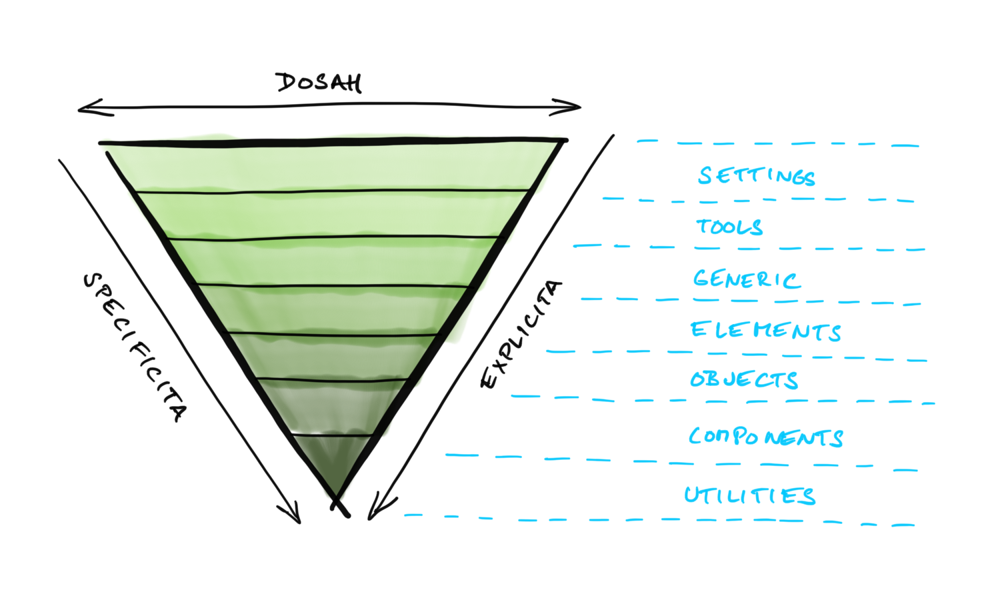
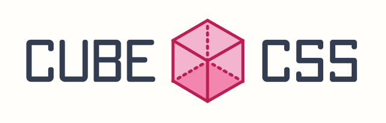

CUBE CSS
Jen další metodologie pro CSS?
Petr Koláček
BEM
- + zapoudřeno v komponentách
- - stále se opakující patterny
- - vymýšlení názvů komponent
Utility class frameworky
- Tailwind, atp.
- + nezná problém oakujících se patternů
- + imho rychlejší práce (pouze s html)
- + většinou lehce odhadnutelné názvy tříd
- - minimální podpora tvorby komponent (první případ -> komponenta složená z TW tříd)
- - závislost na PostCSS
CUBE CSS oba tyto světy spojuje
Není to o jmenné konvenci tříd, ale o KOMPOZICI našeho CSS
ITCSS metodologie
Proč je ITCSS nejpokročilejší metodika organizace CSS

CUBE CSS

Andy Bell
Co znamená CUBE CSS
- [ C ] omposition
- [ U ] tility
- [ B ] lock
- [ E ] xception
CUBE CSS vs BEM vs ITCSS
- opačný přístup
- CUBE CSS jde od abstraktních tříd ke konkrétním
- snaž se nejprve použít obecné třídy, o kterých víme, že se budou v projektu opakovat (Composition, Utility)
- teprve když to nedává smysl, použij konkrétní (Block, Exception)
COMPOSITION
- high-level, flexible layouts
- flow and rhythm
- layoutové třídy (skeletons, grids)
UTILITY
- utility třídy ala Tailwind
- Andy Bell používá pro utility třídey Tailwind
BLOCK
- komponenty podobně jako v BEM
- CUBE CSS nenařizuje žádnou jmennou konvenci
- je to na vás
- klidně je možné použít BEM
```html
<div class="card">
<div class="card__title">...</div>
<div class="card__content">...</div>
</div>
```
EXCEPTION
- modifiers
- řeší se pomocí data-atributes (kontroverzní)
- BLBuvzdornost
- v BEM lze teoreticky napsat několik modifikátorů stejného typu, CSS rozhodne, který se použije
```html
<button class="button" data-type="primary">...</button>
```
Grouping
```html
<article class="[ card ] [ section box ] [ bg-base color-primary ]"></article>
```
- nemusíte nutně používat jen []